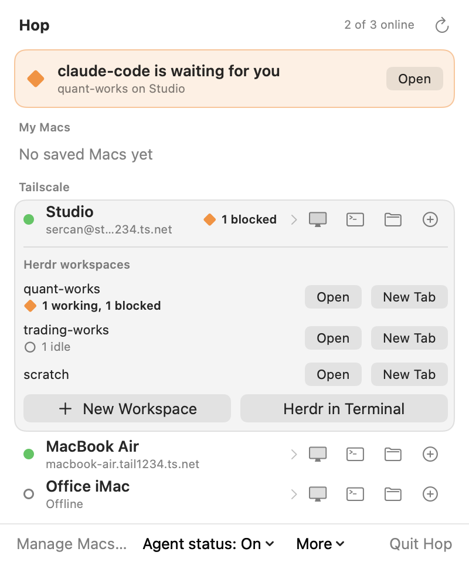
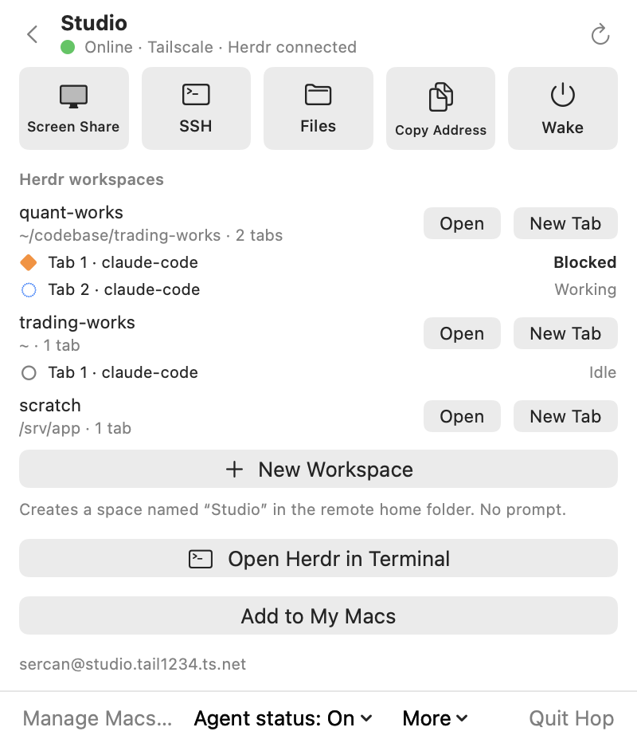
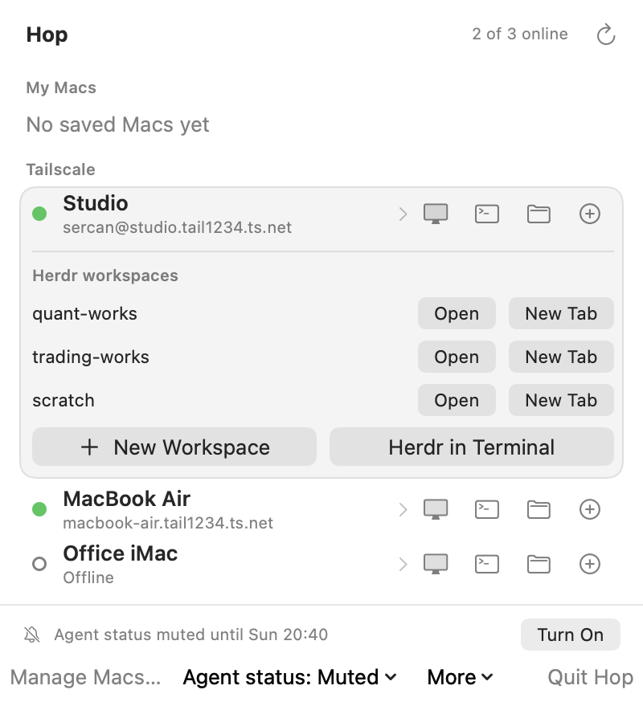

Hop is a tiny macOS menu-bar app. Screen Share, SSH or open files on any of your Macs, find the ones on your Tailscale network automatically, and jump into your Herdr workspaces.
Free and open source (MIT) · macOS 13 or later · Apple silicon and Intel


Click the Hop icon and every Mac you use is listed with its status: a green dot for online, a hollow ring for offline, a dashed ring while Hop is still checking. The list stays quiet: point at a Mac and its Screen Share, SSH and Files buttons appear. Click its name for everything else.
Opens macOS's built-in Screen Sharing to that Mac.
Opens a terminal session, with your user name if you set one.
Connects to the Mac in Finder over file sharing. The button is dimmed when File Sharing appears to be off there.
Every Mac on your tailnet appears by itself, with live status. No API key needed.
In a Mac's detail view, send a Wake-on-LAN packet when you've set a MAC address, or copy the address.
One Swift file, no dependencies, no account, no telemetry. Your list stays on your Mac.
If you run coding agents with Herdr, Hop lists the workspaces on each Mac and gets you into them. None of this appears unless Herdr is installed.
Hop also shows what your agents are doing. The menu-bar icon counts the agents that are blocked and waiting for you, and a banner takes you straight to them. Each workspace shows its own counts, such as "1 working, 1 blocked".

Agent status is on by default. From the panel's More menu you can:
While muted or off, Hop shows no agent status anywhere, and a crossed-out bell appears at the top of the panel. Click it to turn status back on. Your workspaces and their buttons stay.
Hop needs macOS 13 or later and runs on Apple silicon and Intel Macs.
Takes about a minute. You need the Xcode Command Line Tools.
Install the Command Line Tools, if you haven't:
xcode-select --installGet the code, build Hop and copy it to Applications:
git clone https://github.com/sercanatalik/hop-remote-launcher.git
cd hop-remote-launcher
./build.sh --installHop is copied to Applications and starts by itself. Its icon appears in the menu bar.
Ready-built, for both Apple silicon and Intel.
Get Hop.zip from the releases page and unzip it.
Move Hop.app to Applications.
Hop isn't notarised by Apple yet, so macOS blocks it the first time. Try to open it once, then go to System Settings → Privacy & Security and click Open Anyway. Or run:
xattr -dr com.apple.quarantine /Applications/Hop.appOn each remote Mac, open System Settings → General → Sharing and turn on what you want to use.
| Feature in Hop | Turn on |
|---|---|
| Screen Share | Screen Sharing |
| SSH, Open Herdr in Terminal | Remote Login |
| Files | File Sharing |
First launch. macOS may ask for Local Network access. Allow it, or every Mac stays marked offline.
Away from home. Install Tailscale on every Mac and they show up in Hop wherever you are, with no port forwarding.
Herdr workspaces. A Mac shows its workspaces when the Herdr desktop app has it as a machine (Settings → Machines in Herdr) under the same host name Hop uses.
Wake-on-LAN only works on the same local network, and needs "Wake for network access" turned on in the remote Mac's Battery or Energy settings.